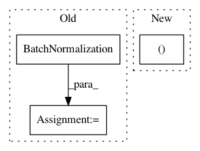

d90f5580d932b801ea3a9715d0dee00fc58ab55a,research/deep_speech/deep_speech_model.py,,_rnn_layer,#Any#Any#Any#Any#Any#Any#Any#,57
Before Change
tensor output for the current layer.
if is_batch_norm:
input_data = tf.keras.layers.BatchNormalization(
momentum=_MOMENTUM, epsilon=_EPSILON)(input_data)
rnn_layer = rnn_cell(
rnn_hidden_size, activation=rnn_activation, return_sequences=True,
name="rnn_{}".format(layer_id))
if is_bidirectional:
After Change
name="rnn_bw_{}".format(layer_id))
if is_bidirectional:
outputs, _ = tf.nn.bidirectional_dynamic_rnn(
cell_fw=fw_cell, cell_bw=bw_cell, inputs=inputs, dtype=tf.float32,
swap_memory=True)
rnn_outputs = tf.concat(outputs, -1)
In pattern: SUPERPATTERN
Frequency: 3
Non-data size: 3
Instances
Project Name: tensorflow/models
Commit Name: d90f5580d932b801ea3a9715d0dee00fc58ab55a
Time: 2018-07-10
Author: haoliang@google.com
File Name: research/deep_speech/deep_speech_model.py
Class Name:
Method Name: _rnn_layer
Project Name: eriklindernoren/Keras-GAN
Commit Name: 4edcbc432d59b73cf79dd9a7364b42a1dafd1eff
Time: 2018-01-21
Author: eriklindernoren@gmail.com
File Name: infogan/infogan.py
Class Name: INFOGAN
Method Name: build_discriminator
Project Name: shenweichen/DeepCTR
Commit Name: 82efc6f939e274545910a0a8b675348255631299
Time: 2018-12-07
Author: last.fantasy@qq.com
File Name: deepctr/layers.py
Class Name: LocalActivationUnit
Method Name: call